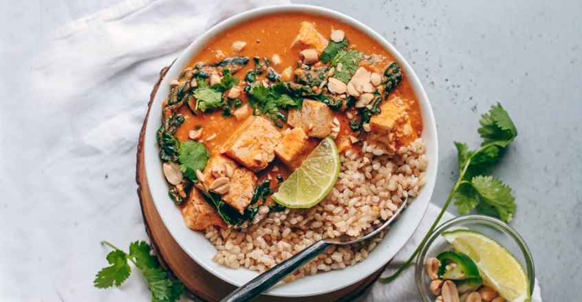

African Peanut Stew
By Taavi Moore

This stew with hearty tofu, a healthy dose of kale, crunchy peanuts, and fresh cilantro will spice up your life with its delicious flavors, textures, and aromas.
10 votes, average: 4.10 out of 510 votes, average: 4.10 out of 510 votes, average: 4.10 out of 510 votes, average: 4.10 out of 510 votes, average: 4.10 out of 5
(10)
Gluten Free Low Sugar
All of our recipes are oil free and vegan.
Prep time: 10 minutes
Cook time: 40 minutes
Ingredients
- ½ white onion, diced
- 2 garlic cloves, diced
- 1 inch knob of fresh ginger, minced
- 3-4 (about 10 oz) plum tomatoes
- 15 oz tofu, cubed
- ½ tsp ground paprika
- Dash of cayenne pepper (optional)
- 1 tsp cumin
- ½ tsp salt
- 2 cups vegetable broth
- ⅓ cup peanut butter
- 1 heaping cup dinosaur kale, chopped
- ¼ cup cilantro, chopped
- ¼ cup peanuts, optional
- Lime wedges
How to Make It
- 1 Preheat oven to 400 degrees F.
- 2 Place tofu on a baking sheet lined with parchment paper and bake for 20 minutes or until slightly crisp and golden brown.
- 3 On another baking sheet lined with parchment paper, place the tomatoes and roast for 12 minutes or until blistered and soft.
- 4 Add roasted tomatoes to a blender, along with the onion, garlic, ginger, and 1 Tbsp of water. Blend until smooth. Set aside.
- 5 In a large stockpot, combine tomato mixture, baked tofu, salt, paprika, cumin, and a dash of cayenne pepper. Bring to a boil, then lower the heat and simmer for 8 minutes.
- 6 Stir in peanut butter and vegetable broth. Season with salt if desired. Simmer for an additional 8 minutes.
- 7 Stir in kale and simmer until wilted.
- 8 Serve with brown rice and garnish with peanuts, cilantro, and lime wedges.
Back to recipe list